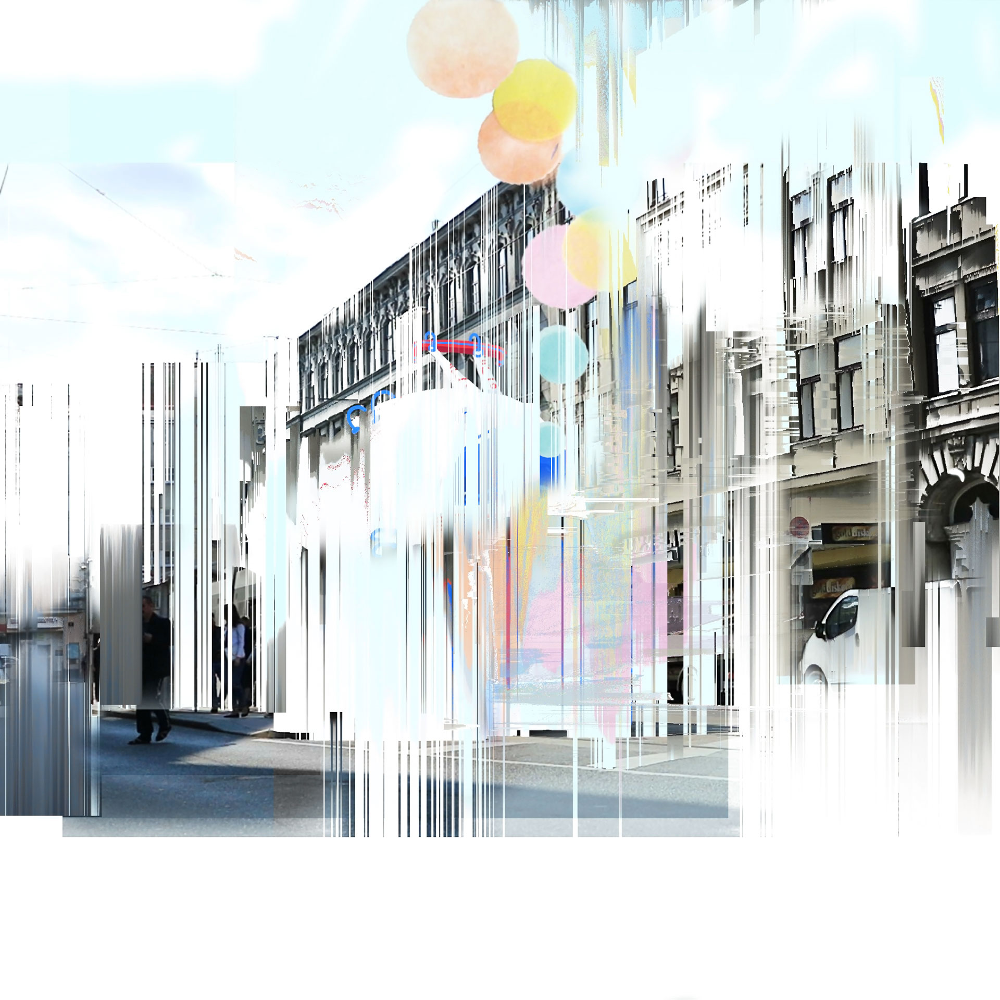
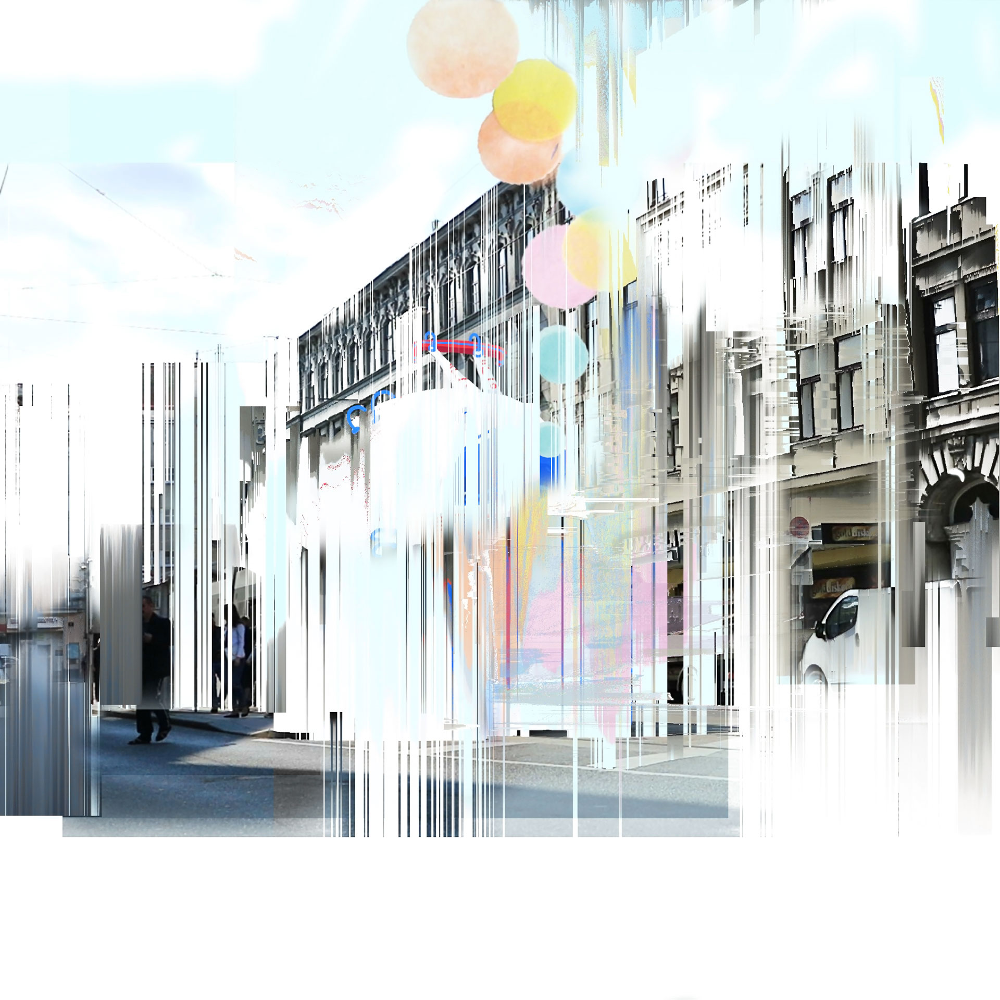

According to Juniper Research the number of Internet of Things devices will reach over 46 billion in 2021. Digital entities are becoming reality and will be a highly influenceable part of our lives. Autonomous cars, wireless toys, robots in supermarkets, google glasses 2.0 and virtual citizens will be no longer fiction. An overwhelming and uncertain position for your living beings in a rapidly changing environment. Change is usually accompanied by insecurity and fear of the unknown. People have a natural tendency for inertia. One simple strategy to stay calm is to see reality with an infant’s-eye vision in a rapidly changing environment. I was curious how people in my environment think about rapid virtual changes in 2021 and started my research in the 17th district in Vienna. My work is focusing on the idea of blending those two dimensions – fiction and reality – into a given information medium, derived from neighbours’ perspective about the digital age. The visual outcome of my research is an in-between world, where virtual entities occupy the realness of urban space, translated through an augmented reality experience.
…